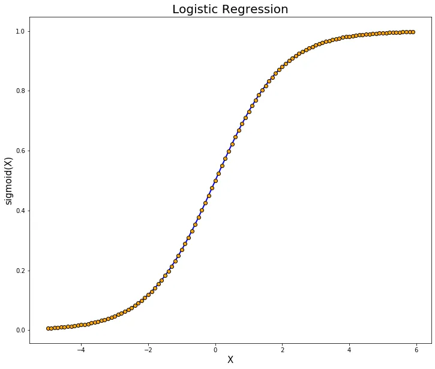

The objective of this project is to use Machine Learning techniques to predict the outcome of Future NBA games with historical data.
Sports betting books are generally unreliable and do a poor job at estimating the results of sports games. The susceptibility of the books to high variance has led to scandals in recent years, as well as a decrease in user enjoyment due to inconsistencies across books on different platforms.
By implementing an algorithm that more accurately predicts the results of games, the goal would be to standardize books across all platforms. Assuming the algorithm works as intended, it could be sold to platforms who would implement it in place of their current-practice prediction models.
Predicting the winner can be difficult because of the complexity of interactions between 10 people on the court [2]. Previous studies have used logistic and linear regression to predict the outcome of games [1]. SVM and Random Forest models can be used to predict the outcome as demonstrated by [3].
The dataset(s) utilized by our project involves player statistics collected over a long period of the NBA. Attributes of each data-point include, but are not limited to: Points, rebounds, assists, opponent, and date.
Link: https://www.kaggle.com/datasets/wyattowalsh/basketball
Quantitative metrics are F1 score, accuracy, precision, and recall because binary classification is used and these are best for binary classification models due to the binary measurement (positive vs negative).
We expect the model to correctly identify wins/losses with an accuracy of at least a baseline of 50% and a stretch goal of outperforming other models (accuracy/prediction upwards of 70%). We plan to have a sustainable model trained once and refined every season via easy to change variables. Ethically, we hope redefining prediction algorithms in the sports betting industry allows consumers better insight into potential bets.
Initially we standardized our dataset to ensure that each feature contributed an equal amount to the PCA transformation.
 Figure Name: Depicting variation accounted for by found principal components
Figure Name: Depicting variation accounted for by found principal components
Observing the scree plot gives us insight towards the principal components that contribute the most to variance in general. It's important to note that this is general variance, not variance directly pertaining towards the win or loss of the home team.
The printed correlations are tied directly to the win or loss of the home team for each principal component. As we can see, the most explanatory principal component is PC1, which is negatively correlated with the win or loss of the home team. Meaning, if there is a high value for PC1 in a given game, that game lends itself to being more likely a loss for the home team. Other components such as PC2 and PC6 are among the higher correlated principal components with wins and losses, but their correlation constant is not nearly as dominant as PC1's.
The dataset is collected after games and since our model is looking to predict the outcome of games, these statistics do not necessarily indicate how features will play out in a given game. There is some merit in observing the cumulative of these values leading up to each game. If a team is consistently putting up high contributions towards the PC1 feature, for example, we hypothesize they are less likely to win the next game.
 Figure Name: Comparison of principal components by correlation with winning
Figure Name: Comparison of principal components by correlation with winning
 Figure Name: Using PC1 and PC2 to visualize their relationship with winning
Figure Name: Using PC1, PC2, PC4 to visualize their relationship with winning
Figure Name: Using PC1 and PC2 to visualize their relationship with winning
Figure Name: Using PC1, PC2, PC4 to visualize their relationship with winning
This portion of data reduction is much more relevant towards the scope of our project. Focusing on the mean of the features by team from their last 10 games provides a good understanding of how the team is performing in general at the time of their upcoming games, as well as the most important features that are contributing towards their wins or losses.
We plan to predict the outcomes of future games using principal components that are most directly correlated (positive or negative) and analyze how they reflect a team leading up to their future games. Higher values of PC1 and PC2 show the percentage of winning goes down. The opposite happened for PC4. While this portion of our project is not used to draw definitive conclusions or predictions, it can establish the foundation for our machine learning models for predicting the outcome of games.
We created two variations of the Logistic Regression model: A basic one using the data as it was fed in and a balanced one with parameter tuning.
 Figure Name: Classification confusion matrix for the basic modelThe basic model has an accuracy of 60% and a recall of 72.73% meaning that it is doing well to predict the outcome of a game. The precision rate at 47.06% is low meaning that it incorrectly predicts when the home team actually wins. This balance between recall and precision shows that it is biased towards predicting loss outcomes for a team. In addition, the F1 score was 57.14%. The confusion matrix shows that there were 9 false positives but also it correctly identifies 10 losses and 8 wins. This is reflected in the lower precision score.
Figure Name: Classification confusion matrix for the balanced modelThe balanced model includes a regularization parameter of 0.1 improving the accuracy to 66.67% and F1 score to 61.54%. A higher F1 score means that there is a better balance of precision and recall. This model compared to the basic one predicts less false positives. This balanced model is also better at predicting losses. The confusion matrix displays that the model correctly identified 12 losses and 8 wins. The recall percentage remains because it is consistent in identifying win outcomes.
The baseline accuracy range that we were targeting was 50% upwards to 70%. While the results of both of these logistic regression models fall within that range there is much that can be done to increase accuracy. One thing we could do is incorporate additional features or include rolling averages for key principal components. This could allow us to see the team's trends over a period of time. Another improvement we could make is to test different and cross validate regularization strengths to increase optimization of the model. Finally as additional validation we could train this model across a different data set to verify the model's reliability. Since we have achieved the targeted accuracy, we are going to be developing more complex models since there is a high possibility of nonlinear relationships between the principal components.
Link: https://docs.google.com/spreadsheets/d/1XQ0EQoz8NIh5HJAoZL4YnIaZN_QbHBAhaE8E8BESF-k/
| Name | Contributions |
|---|---|
| Anirudh | Literature Review, ML Algorithms/Models, Video Creation Midterm contributions: Midterm report, ML model, Analysis |
| Chris | Results & Discussion, Video Creation, GitHub Page Midterm contributions: Model Optimization, Model Visualization, Quantitative Measures, GitHub Page |
| Emily | Preprocessing Methods, Video Creation Midterm contributions: Data preprocessing, Midterm report, Analysis, Visualizations |
| Jalen | Dataset Description, Problem Definition, Video Creation, Gantt Chart Midterm contributions: Midterm report, Data preprocessing, Analysis |
| Jeff | Dataset Description, Problem Definition, Video Creation Midterm contributions: Data preprocessing, ML Modeling, Visualizations, Quantitative Measures |